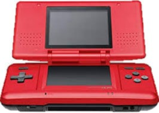
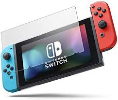

Nintendouのゲーム機
History of Game Machines.
ゲーム機の歴史。
1977.
1980.
1983.
1989.
1990.
1996.
1998.
2001.
2001.
2003.
2004.
2005.
2006.
2011.
2012.
2016.
2017.
カラーテレビゲーム
ゲーム＆ウォッチ
ファミリーコンピュータ
ゲームボーイ
スーパーファミコン
NINTENDOU64
ゲームボーイカラー
ゲームボーイアドバンス
ニンテンドーゲームキューブ
ゲームボーイアドバンスSP
ニンテンドーDS
ゲームボーイミクロ
wii
ニンテンドー３DS
wii U
ニンテンドー２DS
Nintendo Switch
DS Series
画面を2つ持つことや、タッチスクリーン・マイクによる音声認識などの操作方法（ユーザインタフェース）、すれちがい通信といった通信機能を持っており、それらを利用した「Touch! Generations」という一連のシリーズを発売した。 2004年までのテレビゲーム（コンシューマーゲーム）業界では、特に映像表現に関わるハードウェア技術の発達に伴って全体的にゲームが画一的、マンネリ化状態に陥っており、ゲーム人口も減少傾向（ゲーム離れ）にあったため、それを打開することが課題になっていた。また、マスコミなどで非行、引きこもり、ゲーム脳などゲーマーやテレビゲームのネガティブ・キャンペーンも行われていた。 ニンテンドーDSは斬新な方法で新たな層の獲得にも成功した。任天堂が進めた「ゲーム人口の拡大」によって、教育や教材への活用や、Wiiの誕生にも影響を与えた。
Nintendo
Switch

日本でのキャッチコピーは「カタチを変えてどこへでも」、「いつでも、どこでも、誰とでも」。据置・携帯用で遊べるゲーム機として設計され、本体部には画面・バッテリーを装備しており、後述する「Joy-Con（ジョイコン）」と併せて持ち出すことで携帯機としても利用できる。「Nintendo Switchドック（ニンテンドースイッチドック）」と呼ばれる機器に本体を接続することでテレビと共に据え置き機としても遊ぶ事ができ、本体に内蔵したバッテリーへの充電機能・モニターへの接続端子・ドック接続時の電源供給機能を備えている。